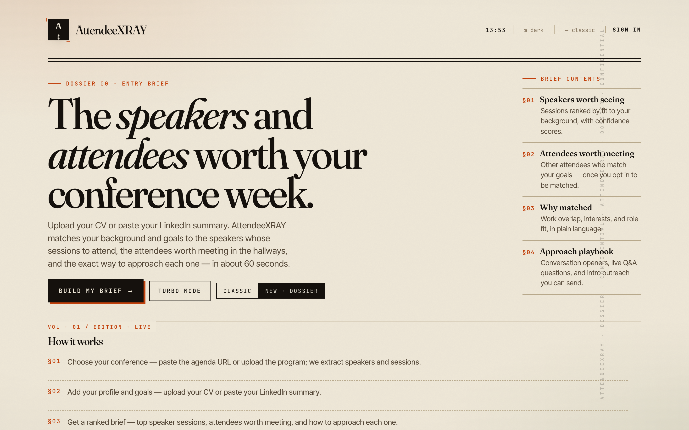
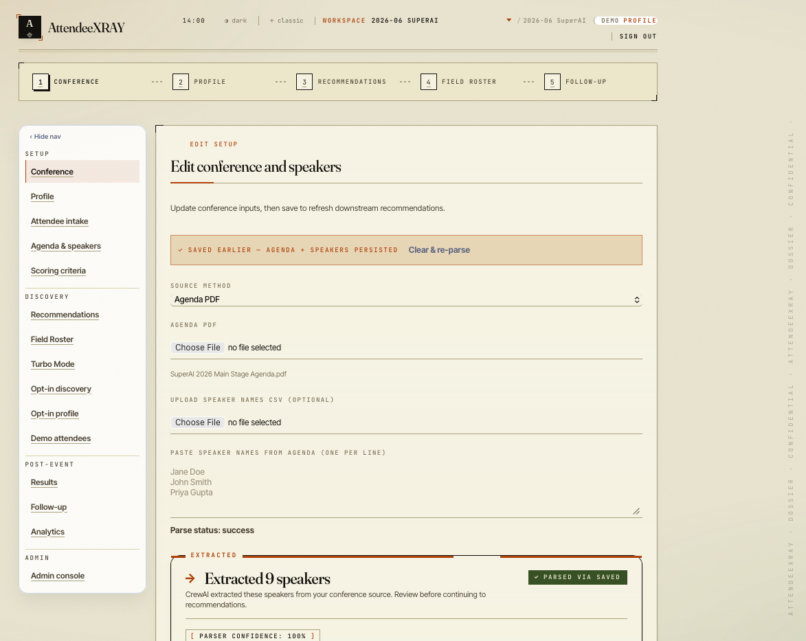
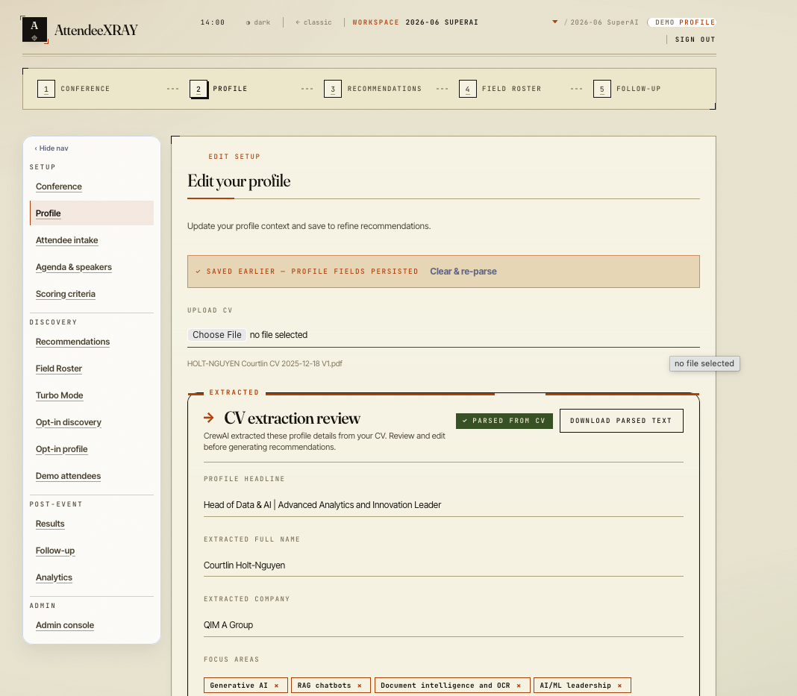
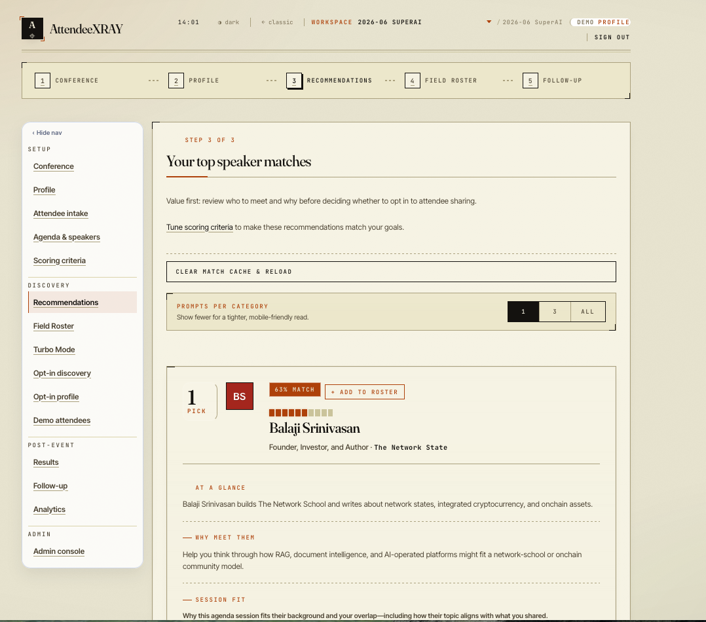
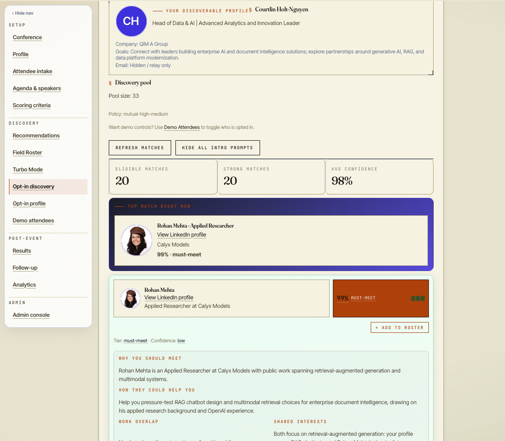

AttendeeXRAY
May 2026 CrewAI FastAPI React
AttendeeXRAY turns messy conference inputs—attendee lists, agendas, and your goals—into ranked, source-backed meeting targets and conversation-ready XRAY cards, so GTM and founder users know who to meet, why, and what to say before they arrive.

Problem & Target Users
Conference networking is high-stakes, but preparation is fragmented across CSVs, event apps, LinkedIn, CRM, and agenda PDFs. Users waste floor time on low-fit contacts and lose post-event follow-up context.
AttendeeXRAY serves B2B GTM and sales professionals (AEs, SDRs, field marketers, BD/partnerships) and startup founders / early GTM operators who need evidence-backed prioritization before they arrive—not generic matchmaking.
Solution Overview
Users create an event workspace, ingest conference sources (agenda PDFs, speaker lists, CVs), and define meeting goals. A Celery-backed 13-stage pipeline runs CrewAI sequential crews to research targets, score fit (0–99), generate XRAY cards with citations, and audit output quality.
The product ships a full journey UI—conference onboarding, profile extraction, speaker recommendations, opt-in attendee discovery, and a Crew Monitor for transparent multi-agent execution.
Key Features
- Conference & agenda intake — Upload agenda PDFs or paste speaker names; CrewAI extracts speakers with confidence scores and review flags.
- Profile extraction — CV upload or pasted LinkedIn text parsed into headline, company, and focus areas via the profile intake agent.
- Speaker recommendations — Ranked matches with fit %, “why meet them,” session fit, and roster handoff.
- Opt-in discovery — Consent-aware attendee profiles with mutual match tiers, confidence, and intro prompts.
- 13-stage async pipeline — Research runs via Celery + Redis with persisted MatchResult, XrayCard, and Citation rows.
- Crew Monitor — Per-stage CrewAI prompt/response traces for debugging and observability.
- Citation-first quality — Guardrails on critical tasks; publish-ready outputs require provenance.
- Production-shaped stack — JWT auth, workspace-scoped APIs, PostgreSQL, Railway deployment.
Multi-agent AI Crew
All agent role/goal/backstory and task text lives in YAML (backend/config/agents.yaml, tasks.yaml). Python wires sequential CrewAI crews with guardrails and tracing—no inline prompts, no silent fallbacks.
| Agent | Role | Tools / Integrations | Trigger |
|---|---|---|---|
| attendee_ingestion_agent | Intake, normalization, per-attendee research briefs | CSV parsing, agenda extraction, dossier context | Validation, agenda upload, pipeline research_target |
| scoring_matching_agent | Fit scoring (0–99) and ranking | OpenAI LLM, JSON guardrails | rank_targets, score_target |
| xray_card_generation_agent | Conversation starters & reason-to-meet | OpenAI LLM, guardrails | compose_strategy |
| speaker_recommendation_agent | Multi-source speaker dossiers | Exa.ai, OpenAI, citations | Recommendations API, speaker research |
| speaker_match_strategist | “Why matched” cards & Q&A prompts | Dossier + user profile context | compose_speaker_match |
| profile_intake_agent | CV/PDF profile parsing | Local PDF/text extraction | Onboarding profile step |
| quality_review_agent | Payload audit, poorly-justified fits | LLM, contract validation | audit_targets |
| opt_in_consent_agent | Opt-in sharing & consent | Workspace discovery APIs | Opt-in / sharing preference flows |
Technical Architecture
- Frontend — React 19, TypeScript, Vite, React Router; workspace-scoped journey flows
- Backend — FastAPI, SQLAlchemy 2, Alembic, Pydantic v2 schemas;
/api/v1only - Data / storage — PostgreSQL (production); Celery + Redis for async jobs
- Integrations — OpenAI (LLM), Exa.ai (speaker web research), optional OTLP/Langfuse observability
Deployment
Live demo on Railway (frontend + API + worker + Postgres + Redis). Local dev via scripts/start-dev.sh or Docker Compose. GitHub → Railway previews on PR, auto-deploy on main.
Key env vars (names only): ATTENDEEXRAY_DATABASE_URL, ATTENDEEXRAY_REDIS_URL, ATTENDEEXRAY_JWT_SECRET, OPENAI_API_KEY, EXA_API_KEY, VITE_API_BASE_URL.
Screenshots
Conference onboarding — Agenda PDF upload with CrewAI speaker extraction (9 speakers, 100% parser confidence).

Profile onboarding — CV extraction review with headline, company, and focus areas parsed by CrewAI.

Speaker recommendations — Ranked top speaker matches with fit %, why meet them, and roster actions.

Opt-in discovery — Attendee matching pool with confidence tiers, must-meet spotlight, and AI-generated intro rationale.

My Role & Learnings as Agentic Architect
- Externalized all CrewAI agent and task definitions to YAML with a strict no-fallback factory—missing spec IDs fail fast instead of silently degrading.
- Orchestrated five sequential crew patterns (per-target pipeline, quality review, speaker match, agenda extraction, provider summary) behind a 13-stage Celery pipeline with cancellation and trace capture.
- Built guardrail registry wiring so high-risk tasks validate JSON shape and citation requirements before persisting publish-ready outputs.
- Shipped Crew Monitor UI surfacing per-stage prompts and responses—making multi-agent execution debuggable for operators, not just developers.
- Deployed a production-shaped stack (FastAPI + Postgres + Redis + Railway) while keeping the AAMAD modular workflow and contract tests as CI gates.